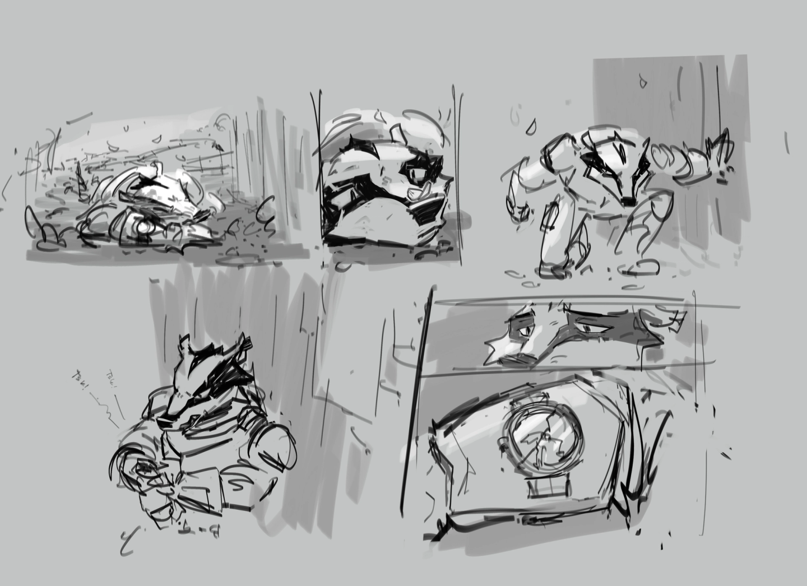
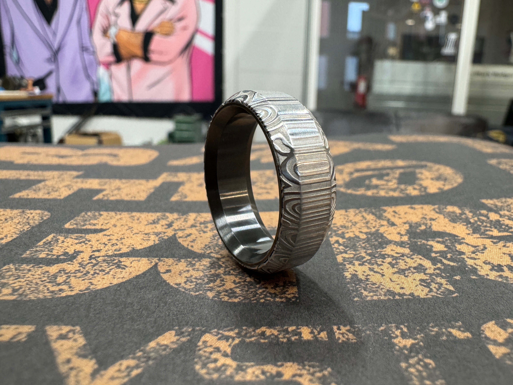
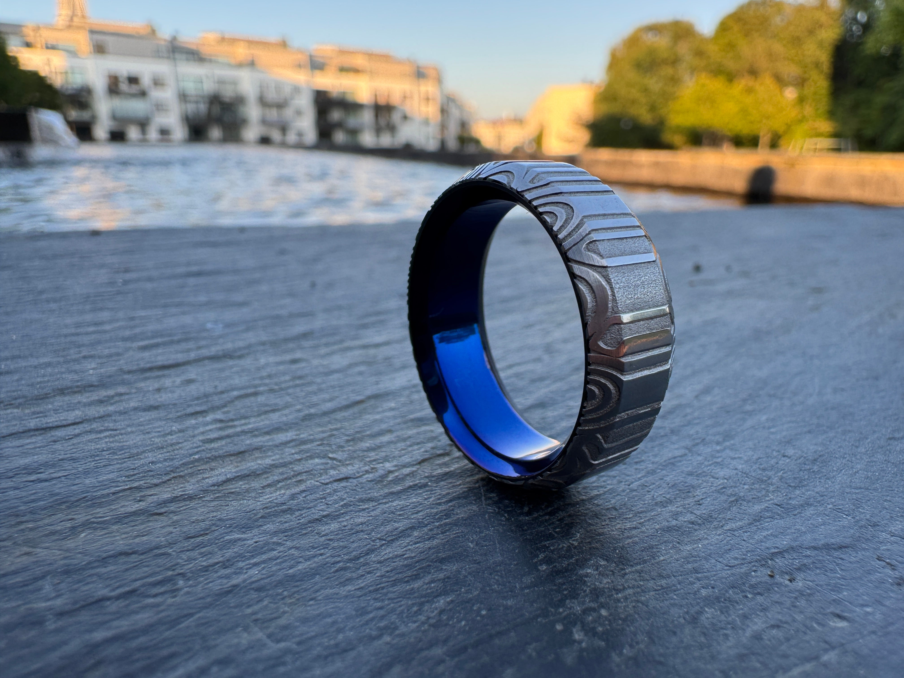
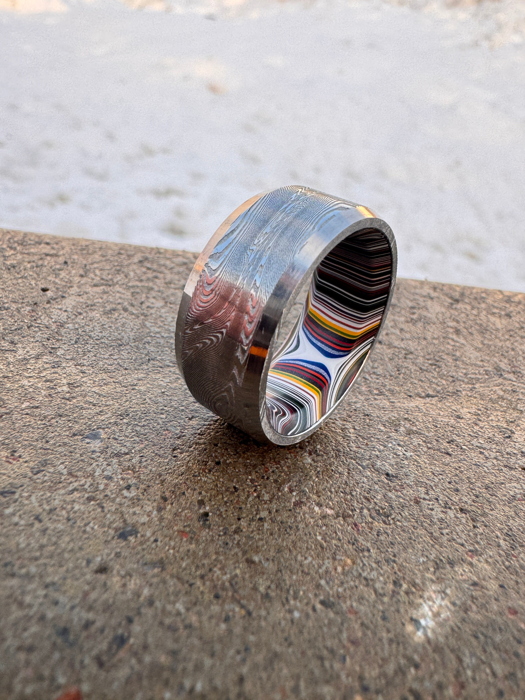
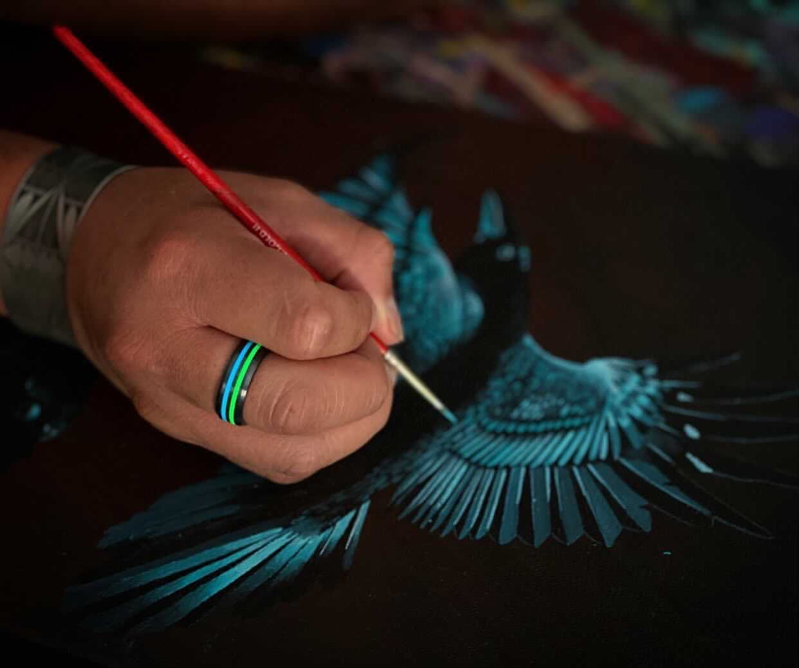

Black Badger / Artistic Exploration
Moving from a "Marketplace" to a "Creative Universe".
Direction 01: The Drafting Table
PROJECT SABOTAGE / R1

SPECIMEN ID: 20TH-ANNIV
The 20th Anniversary Ring
It's been 20 years since I started Black Badger. This ring is a physical object that fell out of that universe and landed on your finger.
Milled from solid Zirconium metal with a tech-hex background patterning. The core is a proprietary composite 20 years in the making.
SIZE: 17 - 22.5mm
STATUS: IN WORKSHOP
STATUS: IN WORKSHOP
$2,000.00
Direction 02: The Studio Journal

"I started this company with the aim of creating fun little objects that had no other job than to make us smile."
The Fordite / Damascus Artifact
Detroit auto paint history meet high-end metallurgy. Hand-forged by Chris Ploof, finished in the Gothenburg workshop.
$1,500.00
Chapter 12 / Specimen 03




Direction 03: The Workshop Lab

Artifact R1.0
Zirconium
Pawprint
Milled from solid Zirconium metal. Blowtorched black. Technical archeology in physical form.
$400.00
KACHINK —
"Zirconium behaves differently under a torch—it's like painting with fire."